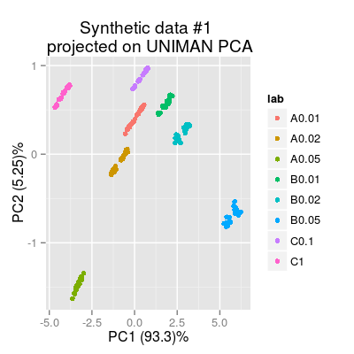

Demo SensorArrayNoise.
Description
Demo SensorArrayNoise.
Examples
set.seed(1) data(UNIMANshort) conc <- UNIMANshort$C sdata.uniman <- UNIMANshort$dat mod.uniman <- prcomp(sdata.uniman, center = TRUE, scale = FALSE) # 1) a virtual array with default noise parameters # - csd (0.1), ssd (0.1), dsd (0.1) # - data model 'mvr' reproduces the structure of UNIMAN data better sa <- SensorArray(model = "plsr", num = 1:17, enableSorption = FALSE) # plot short-term UNIMAN dataset (200 samples) p0 <- plotPCA(sa, conc = conc, sdata = sdata.uniman, mod = mod.uniman, main = "UNIMAN PCA") p0p1 <- plotPCA(sa, conc = conc, mod = mod.uniman, main = "Synthetic data #1 \n projected on UNIMAN PCA") p1
# 2) add more noise to 'sa' # - csd = 0.5, ssd =0.5, dsd = 0.5 csd(sa) <- 0.5 ssd(sa) <- 0.5 dsd(sa) <- 0.5 p2 <- plotPCA(sa, conc = conc, mod = mod.uniman, main = "Synthetic data #2 \n projected on UNIMAN PCA") p2